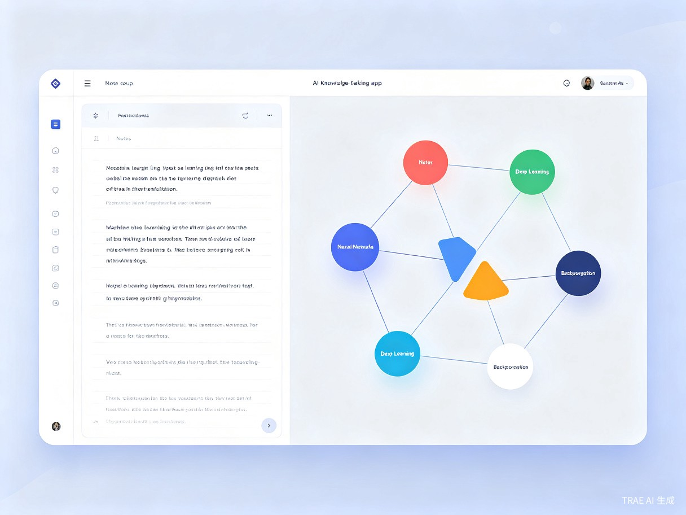

01 创意介绍
想解决什么问题
学生和职场人在学习过程中做的大量笔记是碎片化的、孤立的，难以形成系统性的知识网络，复习时效率低下，知识之间缺乏关联。
灵感来源
我自己在学习编程和阅读专业书籍时，发现传统笔记工具（如 Notion、印象笔记）虽然能记录内容，但无法自动发现知识点之间的关联。每次复习都需要手动整理，耗时且容易遗漏重要联系。
产品形态
一款基于 AI 的 Web 笔记应用 + 浏览器插件，用户记录笔记时，系统自动提取关键概念、建立知识关联，并可视化呈现为动态知识图谱。
02 目标用户及痛点
核心用户群体
- 大学生、研究生（课程笔记、备考复习）
- 职场学习者（技术文档、职业技能）
- 知识工作者（研究人员、内容创作者）
使用场景
- 课堂/网课学习时实时记录笔记
- 阅读书籍/论文时提取重点
- 项目学习时整理技术文档
- 考前复习时快速回顾知识体系
当前痛点
线性存储
传统笔记是线性存储，难以看到知识全貌
手动关联
手动建立知识关联耗时耗力
复习困难
复习时不知道从哪里开始，容易遗漏重点
信息负担
笔记越积越多，反而成为信息负担
03 价值与意义
效率提升：自动提取知识点并建立关联，节省 80% 的整理时间；知识图谱可视化让复习效率提升 3 倍以上；智能推荐相关笔记，避免知识孤岛。
社会价值：降低知识管理的门槛，让更多人享受高效学习的乐趣；帮助教育资源匮乏地区的学生建立系统化的学习方法；促进终身学习文化的形成。
核心功能亮点
智能概念提取
自动识别笔记中的关键概念和术语
自动关联图谱
基于语义分析建立知识点之间的关系
可视化探索
交互式知识图谱，点击节点深入探索
智能复习推荐
根据遗忘曲线推荐复习内容和路径
04 产品展示

知识图谱演示
以下是一个机器学习主题的知识图谱示例。用户可以拖拽节点、缩放视图，点击任意节点查看详细笔记内容。
系统架构
flowchart TB
subgraph 用户端
A[Web 笔记编辑器]
B[浏览器插件]
end
subgraph AI 服务层
C[概念提取引擎]
D[语义关联分析]
E[知识图谱生成]
end
subgraph 数据层
F[(笔记数据库)]
G[(图谱数据库)]
end
A --> C
B --> C
C --> D
D --> E
E --> G
A --> F
E --> A
05 总结与展望
AI 知识图谱笔记将改变人们记录和学习知识的方式。通过 AI 技术自动构建知识之间的关联，让每一篇笔记都成为知识网络的一部分，而不是孤立的信息片段。
未来规划：
- 支持多模态笔记（图片、音频、视频）
- 团队协作知识图谱共享
- 与主流学习平台（MOOC、知乎等）集成
- 基于知识图谱的 AI 问答助手